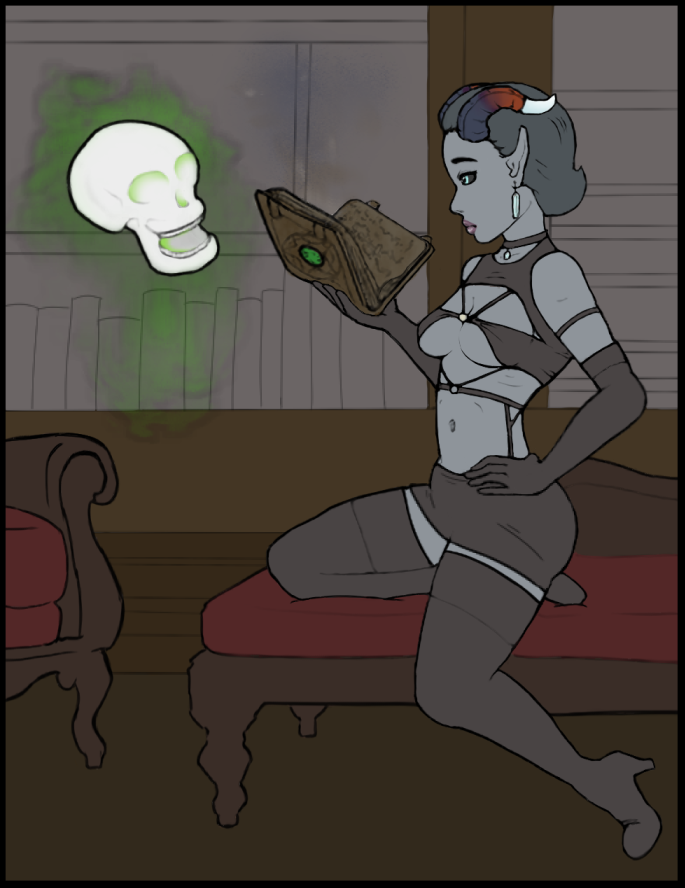

About

The Amen Corner serves as the central hub for upcoming webcomics, such as Ov Flask and Folly, and other mundane things.

As the internet becomes more corporate and sanitized each day, The Amen Corner was created in a small, yet valiant effort against the digital proletariat who purvey nothing but meaningless, sponsor-gratifying drivel hosted on centralized, anti-user schlock mills. ¡Viva la revolución digital!
Just kidding. I wanted to make webcomics and upload them to my own site. Some of you "oldheads" or "uncs" might remember the glory days of MySpace. Some of you might have even built a website back in the day or simply surfed the Wild West of the old internet. If you've ever bricked the family computer trying to download a song from LimeWire or forwarded a chain email to save your grandma from dying, then this site might be up your alley.